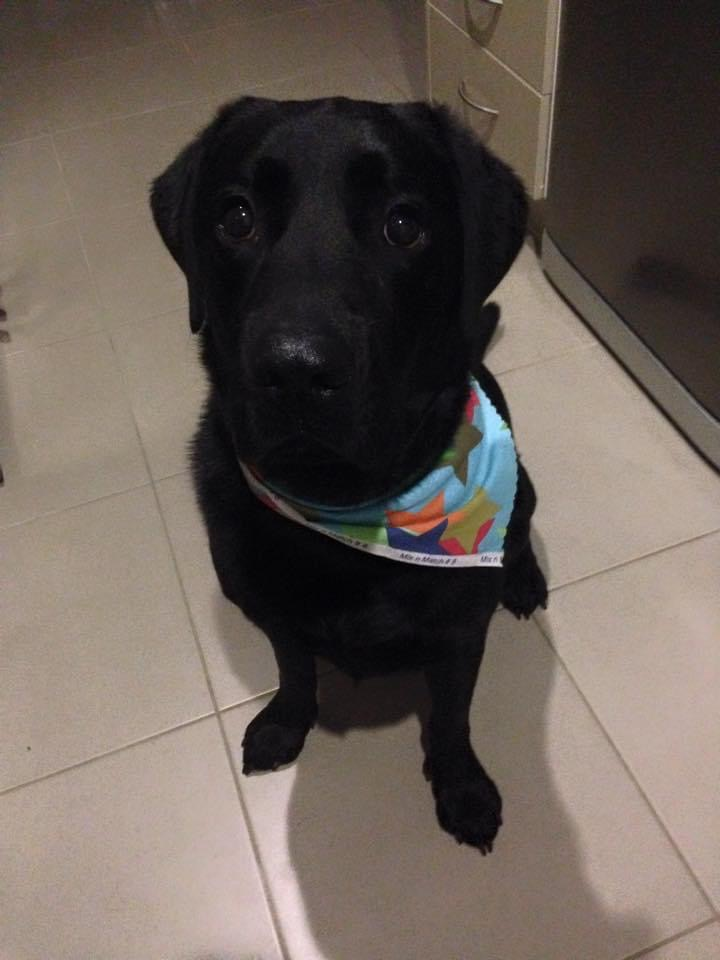

My name is David, and I am just beginning my university studies for the Bachelor of Information Technology. I currently work for a retail company where I am the stock controller and also look after health & safety.I also have an 11yr old black Labrador named Barney who still acts like he is about 6 months old.
In my spare time I enjoy playing some video games or practicing the piano which I am still currently learning. I also have my open water scuba diving licence and have dived in a few interesting places such as Hawaii.
My interest in IT started when I was in primary school. I enjoyed the small amount of time we would get to play on the class computer and when we were allowed, I would play on the library computers at lunch time. This developed further when I got into high school, where I had IT as a subject for my School Certificate (year 10) and Higher School Certificate (year 12). One of the requirements for the school certificate was doing work experience for 2 weeks toward the end of the year, which I chose to do at a local computer store. I got to help repair and build computers during my that time which I really enjoyed. They even told me to bring in my computer, which I had built, and we could tinker around with it. At home, whenever I had the chance, I would be playing around with our computer or fiddling with electronics. This is when I really decided that I would one day like to have a career somewhere in IT.
I have never worked directly in an IT role but have had some experience with some aspects of IT. For a few years I worked at Dick Smith Electronics where I was one of the people that would trouble shoot or help fix customers computers instore. I was also a salesperson, so I had to have quite a lot of knowledge about different aspects of computers and technology.
In my current job there is some general IT work expectations of my role such as setup and troubleshooting of the stores IT equipment (eg. POS computers, printers etc). I like to be involved whenever anything IT related comes up at work as I enjoy it. I decided if I wanted to actually get into a proper IT role I would need to study to get a degree in IT. That’s when I started looking into study options. Because I work full time and couldn’t really afford to cut back, I needed to find something that allowed me to study part time but also at a time that would work for me. I found Open Universities Australia and spoke to the team there, and they recommended RMIT as a great option for what I was looking for.
I am hoping that by the end of my studies with RMIT I will have a sound knowledge of IT and will be setup to be able to pursue a career somewhere in the field of IT. I don’t really have a specific area of IT that I am sure I want to follow just yet so I am hoping that this course will provide me with a broad knowledge that I can then use to decide which aspect I would like to develop further.